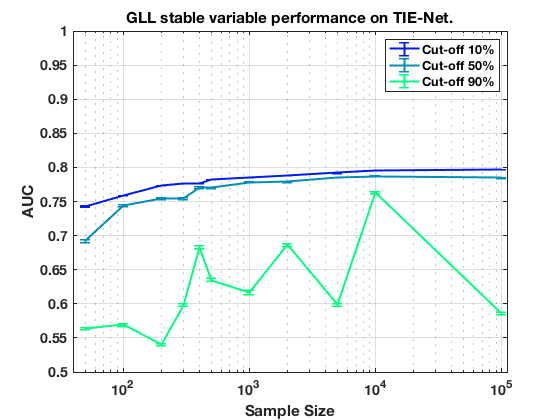
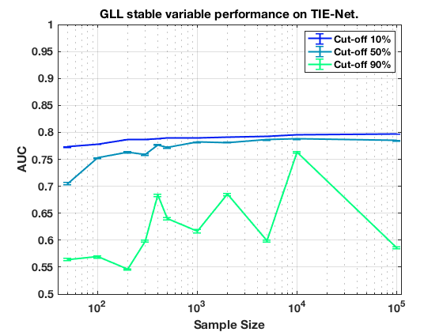

Stable Variable Experiments on TieNet with HPC K 3.
summary_stable_vars("TieNet", 1)
Figure 1. HPC_K_3 Model Generalizatbility.
___________________________________________

Figure 2. HPC_K_3 Feature Generalizability.
____________________________________________

Table 1. Stability Cut Off Performance. Sample Size = 50. HPC_K_3.
___________________________________________________________________
Stability Model_Generalizability Feature_Generalizability Number_Stable_Features Number_Non_Zero
_________ ______________________ ________________________ ______________________ _______________
'>=00%' ' 0.739 +/- 0.001 ' ' 0.773 +/- 0.001 ' ' 12.0 +/- 4.4 ' 3
'>=10%' ' 0.742 +/- 0.001 ' ' 0.773 +/- 0.001 ' ' 12.0 +/- 4.4 ' 3
'>=20%' ' 0.730 +/- 0.001 ' ' 0.766 +/- 0.001 ' ' 10.3 +/- 3.7 ' 3
'>=30%' ' 0.721 +/- 0.002 ' ' 0.739 +/- 0.002 ' ' 7.7 +/- 3.0 ' 3
'>=40%' ' 0.720 +/- 0.002 ' ' 0.739 +/- 0.002 ' ' 7.7 +/- 3.0 ' 3
'>=50%' ' 0.695 +/- 0.002 ' ' 0.710 +/- 0.002 ' ' 9.0 +/- 5.7 ' 2
'>=60%' ' 0.688 +/- 0.002 ' ' 0.701 +/- 0.002 ' ' 14.0 +/- 0.0 ' 1
'>=70%' ' 0.662 +/- 0.002 ' ' 0.676 +/- 0.002 ' ' 14.0 +/- 0.0 ' 1
'>=80%' ' 0.671 +/- 0.002 ' ' 0.679 +/- 0.002 ' ' 14.0 +/- 0.0 ' 1
'>=90%' ' 0.589 +/- 0.002 ' ' 0.589 +/- 0.002 ' ' 11.0 +/- 0.0 ' 1
Table 2. Stability Cut Off Performance. Sample Size = 100. HPC_K_3.
____________________________________________________________________
Stability Model_Generalizability Feature_Generalizability Number_Stable_Features Number_Non_Zero
_________ ______________________ ________________________ ______________________ _______________
'>=00%' ' 0.760 +/- 0.001 ' ' 0.778 +/- 0.001 ' ' 34.3 +/- 8.1 ' 3
'>=10%' ' 0.759 +/- 0.001 ' ' 0.778 +/- 0.001 ' ' 34.3 +/- 8.1 ' 3
'>=20%' ' 0.755 +/- 0.001 ' ' 0.771 +/- 0.001 ' ' 16.7 +/- 5.1 ' 3
'>=30%' ' 0.750 +/- 0.001 ' ' 0.760 +/- 0.001 ' ' 12.5 +/- 7.4 ' 2
'>=40%' ' 0.751 +/- 0.001 ' ' 0.760 +/- 0.001 ' ' 12.5 +/- 7.4 ' 2
'>=50%' ' 0.746 +/- 0.001 ' ' 0.755 +/- 0.001 ' ' 9.0 +/- 5.7 ' 2
'>=60%' ' 0.733 +/- 0.002 ' ' 0.739 +/- 0.002 ' ' 7.5 +/- 4.6 ' 2
'>=70%' ' 0.721 +/- 0.002 ' ' 0.724 +/- 0.002 ' ' 6.5 +/- 3.9 ' 2
'>=80%' ' 0.694 +/- 0.002 ' ' 0.694 +/- 0.002 ' ' 11.0 +/- 0.0 ' 1
'>=90%' ' 0.596 +/- 0.002 ' ' 0.596 +/- 0.002 ' ' 10.0 +/- 0.0 ' 1
Table 3. Stability Cut Off Performance. Sample Size = 200. HPC_K_3.
____________________________________________________________________
Stability Model_Generalizability Feature_Generalizability Number_Stable_Features Number_Non_Zero
_________ ______________________ ________________________ ______________________ _______________
'>=00%' ' 0.774 +/- 0.000 ' ' 0.786 +/- 0.000 ' ' 15.0 +/- 5.3 ' 3
'>=10%' ' 0.774 +/- 0.000 ' ' 0.786 +/- 0.000 ' ' 15.0 +/- 5.3 ' 3
'>=20%' ' 0.775 +/- 0.000 ' ' 0.785 +/- 0.000 ' ' 11.7 +/- 5.3 ' 3
'>=30%' ' 0.772 +/- 0.000 ' ' 0.781 +/- 0.000 ' ' 9.0 +/- 4.1 ' 3
'>=40%' ' 0.773 +/- 0.000 ' ' 0.781 +/- 0.000 ' ' 9.0 +/- 4.1 ' 3
'>=50%' ' 0.759 +/- 0.001 ' ' 0.769 +/- 0.001 ' ' 8.3 +/- 3.9 ' 3
'>=60%' ' 0.702 +/- 0.002 ' ' 0.709 +/- 0.002 ' ' 8.0 +/- 3.8 ' 3
'>=70%' ' 0.703 +/- 0.002 ' ' 0.713 +/- 0.002 ' ' 7.0 +/- 3.5 ' 2
'>=80%' ' 0.621 +/- 0.002 ' ' 0.629 +/- 0.002 ' ' 6.0 +/- 3.5 ' 2
'>=90%' ' 0.540 +/- 0.001 ' ' 0.546 +/- 0.001 ' ' 10.0 +/- 0.0 ' 1
Table 4. Stability Cut Off Performance. Sample Size = 300. HPC_K_3.
____________________________________________________________________
Stability Model_Generalizability Feature_Generalizability Number_Stable_Features Number_Non_Zero
_________ ______________________ ________________________ ______________________ _______________
'>=00%' ' 0.778 +/- 0.000 ' ' 0.787 +/- 0.000 ' ' 15.3 +/- 5.4 ' 3
'>=10%' ' 0.776 +/- 0.000 ' ' 0.787 +/- 0.000 ' ' 15.3 +/- 5.4 ' 3
'>=20%' ' 0.779 +/- 0.000 ' ' 0.787 +/- 0.000 ' ' 13.7 +/- 5.3 ' 3
'>=30%' ' 0.780 +/- 0.000 ' ' 0.786 +/- 0.000 ' ' 10.3 +/- 4.5 ' 3
'>=40%' ' 0.779 +/- 0.000 ' ' 0.786 +/- 0.000 ' ' 10.3 +/- 4.5 ' 3
'>=50%' ' 0.754 +/- 0.002 ' ' 0.759 +/- 0.002 ' ' 9.0 +/- 4.1 ' 3
'>=60%' ' 0.731 +/- 0.002 ' ' 0.733 +/- 0.002 ' ' 8.3 +/- 3.9 ' 3
'>=70%' ' 0.715 +/- 0.002 ' ' 0.716 +/- 0.002 ' ' 11.5 +/- 7.4 ' 2
'>=80%' ' 0.624 +/- 0.003 ' ' 0.624 +/- 0.003 ' ' 11.0 +/- 7.1 ' 2
'>=90%' ' 0.598 +/- 0.002 ' ' 0.598 +/- 0.002 ' ' 10.5 +/- 6.7 ' 2
Table 5. Stability Cut Off Performance. Sample Size = 400. HPC_K_3.
____________________________________________________________________
Stability Model_Generalizability Feature_Generalizability Number_Stable_Features Number_Non_Zero
_________ ______________________ ________________________ ______________________ _______________
'>=00%' ' 0.777 +/- 0.000 ' ' 0.789 +/- 0.000 ' ' 15.3 +/- 4.8 ' 3
'>=10%' ' 0.777 +/- 0.000 ' ' 0.789 +/- 0.000 ' ' 15.3 +/- 4.8 ' 3
'>=20%' ' 0.778 +/- 0.000 ' ' 0.787 +/- 0.000 ' ' 14.0 +/- 4.3 ' 3
'>=30%' ' 0.777 +/- 0.000 ' ' 0.786 +/- 0.000 ' ' 12.3 +/- 4.6 ' 3
'>=40%' ' 0.777 +/- 0.000 ' ' 0.786 +/- 0.000 ' ' 12.3 +/- 4.6 ' 3
'>=50%' ' 0.765 +/- 0.001 ' ' 0.770 +/- 0.001 ' ' 11.3 +/- 4.8 ' 3
'>=60%' ' 0.733 +/- 0.002 ' ' 0.737 +/- 0.002 ' ' 9.0 +/- 3.8 ' 3
'>=70%' ' 0.716 +/- 0.002 ' ' 0.719 +/- 0.002 ' ' 8.3 +/- 3.9 ' 3
'>=80%' ' 0.707 +/- 0.002 ' ' 0.707 +/- 0.002 ' ' 11.0 +/- 7.1 ' 2
'>=90%' ' 0.654 +/- 0.003 ' ' 0.654 +/- 0.003 ' ' 10.5 +/- 6.7 ' 2
Table 6. Stability Cut Off Performance. Sample Size = 500. HPC_K_3.
____________________________________________________________________
Stability Model_Generalizability Feature_Generalizability Number_Stable_Features Number_Non_Zero
_________ ______________________ ________________________ ______________________ _______________
'>=00%' ' 0.784 +/- 0.000 ' ' 0.789 +/- 0.000 ' ' 19.3 +/- 4.9 ' 3
'>=10%' ' 0.783 +/- 0.000 ' ' 0.789 +/- 0.000 ' ' 19.3 +/- 4.9 ' 3
'>=20%' ' 0.783 +/- 0.000 ' ' 0.788 +/- 0.000 ' ' 16.0 +/- 5.2 ' 3
'>=30%' ' 0.782 +/- 0.000 ' ' 0.787 +/- 0.000 ' ' 13.0 +/- 4.9 ' 3
'>=40%' ' 0.782 +/- 0.000 ' ' 0.787 +/- 0.000 ' ' 13.0 +/- 4.9 ' 3
'>=50%' ' 0.769 +/- 0.001 ' ' 0.772 +/- 0.001 ' ' 11.0 +/- 5.2 ' 3
'>=60%' ' 0.758 +/- 0.001 ' ' 0.760 +/- 0.001 ' ' 10.0 +/- 4.9 ' 3
'>=70%' ' 0.740 +/- 0.002 ' ' 0.742 +/- 0.002 ' ' 27.0 +/- 0.0 ' 1
'>=80%' ' 0.712 +/- 0.002 ' ' 0.715 +/- 0.002 ' ' 26.0 +/- 0.0 ' 1
'>=90%' ' 0.657 +/- 0.003 ' ' 0.660 +/- 0.003 ' ' 25.0 +/- 0.0 ' 1
Table 7. Stability Cut Off Performance. Sample Size = 1000. HPC_K_3.
_____________________________________________________________________
Stability Model_Generalizability Feature_Generalizability Number_Stable_Features Number_Non_Zero
_________ ______________________ ________________________ ______________________ _______________
'>=00%' ' 0.785 +/- 0.000 ' ' 0.790 +/- 0.000 ' ' 21.0 +/- 2.9 ' 3
'>=10%' ' 0.785 +/- 0.000 ' ' 0.790 +/- 0.000 ' ' 21.0 +/- 2.9 ' 3
'>=20%' ' 0.785 +/- 0.000 ' ' 0.789 +/- 0.000 ' ' 14.7 +/- 3.3 ' 3
'>=30%' ' 0.784 +/- 0.000 ' ' 0.789 +/- 0.000 ' ' 10.3 +/- 4.2 ' 3
'>=40%' ' 0.784 +/- 0.000 ' ' 0.789 +/- 0.000 ' ' 10.3 +/- 4.2 ' 3
'>=50%' ' 0.778 +/- 0.001 ' ' 0.782 +/- 0.001 ' ' 10.0 +/- 4.3 ' 3
'>=60%' ' 0.780 +/- 0.000 ' ' 0.783 +/- 0.000 ' ' 9.7 +/- 4.4 ' 3
'>=70%' ' 0.753 +/- 0.002 ' ' 0.755 +/- 0.002 ' ' 13.5 +/- 8.1 ' 2
'>=80%' ' 0.720 +/- 0.002 ' ' 0.721 +/- 0.002 ' ' 10.0 +/- 5.7 ' 2
'>=90%' ' 0.641 +/- 0.003 ' ' 0.641 +/- 0.003 ' ' 9.5 +/- 6.0 ' 2
Table 8. Stability Cut Off Performance. Sample Size = 2000. HPC_K_3.
_____________________________________________________________________
Stability Model_Generalizability Feature_Generalizability Number_Stable_Features Number_Non_Zero
_________ ______________________ ________________________ ______________________ _______________
'>=00%' ' 0.789 +/- 0.000 ' ' 0.791 +/- 0.000 ' ' 13.0 +/- 3.2 ' 3
'>=10%' ' 0.788 +/- 0.000 ' ' 0.791 +/- 0.000 ' ' 13.0 +/- 3.2 ' 3
'>=20%' ' 0.788 +/- 0.000 ' ' 0.791 +/- 0.000 ' ' 11.7 +/- 3.3 ' 3
'>=30%' ' 0.788 +/- 0.000 ' ' 0.790 +/- 0.000 ' ' 11.0 +/- 3.5 ' 3
'>=40%' ' 0.788 +/- 0.000 ' ' 0.790 +/- 0.000 ' ' 11.0 +/- 3.5 ' 3
'>=50%' ' 0.781 +/- 0.001 ' ' 0.783 +/- 0.001 ' ' 9.0 +/- 4.1 ' 3
'>=60%' ' 0.751 +/- 0.002 ' ' 0.752 +/- 0.002 ' ' 9.0 +/- 4.1 ' 3
'>=70%' ' 0.736 +/- 0.002 ' ' 0.736 +/- 0.002 ' ' 7.0 +/- 2.9 ' 3
'>=80%' ' 0.685 +/- 0.002 ' ' 0.686 +/- 0.002 ' ' 6.7 +/- 3.0 ' 3
'>=90%' ' 0.690 +/- 0.002 ' ' 0.689 +/- 0.002 ' ' 9.0 +/- 5.7 ' 2
Table 9. Stability Cut Off Performance. Sample Size = 5000. HPC_K_3.
_____________________________________________________________________
Stability Model_Generalizability Feature_Generalizability Number_Stable_Features Number_Non_Zero
_________ ______________________ ________________________ ______________________ _______________
'>=00%' ' 0.792 +/- 0.000 ' ' 0.793 +/- 0.000 ' ' 23.0 +/- 3.3 ' 3
'>=10%' ' 0.792 +/- 0.000 ' ' 0.793 +/- 0.000 ' ' 23.0 +/- 3.3 ' 3
'>=20%' ' 0.791 +/- 0.000 ' ' 0.792 +/- 0.000 ' ' 18.3 +/- 3.4 ' 3
'>=30%' ' 0.790 +/- 0.000 ' ' 0.791 +/- 0.000 ' ' 15.3 +/- 3.5 ' 3
'>=40%' ' 0.790 +/- 0.000 ' ' 0.791 +/- 0.000 ' ' 15.3 +/- 3.5 ' 3
'>=50%' ' 0.782 +/- 0.001 ' ' 0.783 +/- 0.001 ' ' 15.0 +/- 3.4 ' 3
'>=60%' ' 0.767 +/- 0.001 ' ' 0.768 +/- 0.001 ' ' 14.3 +/- 3.7 ' 3
'>=70%' ' 0.746 +/- 0.002 ' ' 0.747 +/- 0.002 ' ' 11.3 +/- 3.0 ' 3
'>=80%' ' 0.697 +/- 0.002 ' ' 0.698 +/- 0.002 ' ' 14.5 +/- 1.8 ' 2
'>=90%' ' 0.598 +/- 0.002 ' ' 0.598 +/- 0.002 ' ' 14.0 +/- 2.1 ' 2
Table 10. Stability Cut Off Performance. Sample Size = 10000. HPC_K_3.
_______________________________________________________________________
Stability Model_Generalizability Feature_Generalizability Number_Stable_Features Number_Non_Zero
_________ ______________________ ________________________ ______________________ _______________
'>=00%' ' 0.795 +/- 0.000 ' ' 0.796 +/- 0.000 ' ' 23.7 +/- 2.6 ' 3
'>=10%' ' 0.795 +/- 0.000 ' ' 0.796 +/- 0.000 ' ' 23.7 +/- 2.6 ' 3
'>=20%' ' 0.794 +/- 0.000 ' ' 0.795 +/- 0.000 ' ' 21.7 +/- 3.2 ' 3
'>=30%' ' 0.792 +/- 0.000 ' ' 0.793 +/- 0.000 ' ' 18.7 +/- 4.2 ' 3
'>=40%' ' 0.792 +/- 0.000 ' ' 0.793 +/- 0.000 ' ' 18.7 +/- 4.2 ' 3
'>=50%' ' 0.783 +/- 0.001 ' ' 0.783 +/- 0.001 ' ' 18.0 +/- 4.6 ' 3
'>=60%' ' 0.777 +/- 0.001 ' ' 0.777 +/- 0.001 ' ' 18.0 +/- 4.6 ' 3
'>=70%' ' 0.768 +/- 0.001 ' ' 0.768 +/- 0.001 ' ' 17.7 +/- 4.5 ' 3
'>=80%' ' 0.747 +/- 0.001 ' ' 0.747 +/- 0.001 ' ' 25.0 +/- 0.0 ' 2
'>=90%' ' 0.767 +/- 0.001 ' ' 0.767 +/- 0.001 ' ' 25.0 +/- 0.0 ' 2
Table 11. Stability Cut Off Performance. Sample Size = 100000. HPC_K_3.
________________________________________________________________________
Stability Model_Generalizability Feature_Generalizability Number_Stable_Features Number_Non_Zero
_________ ______________________ ________________________ ______________________ _______________
'>=00%' ' 0.797 +/- 0.000 ' ' 0.797 +/- 0.000 ' ' 25.3 +/- 2.4 ' 3
'>=10%' ' 0.797 +/- 0.000 ' ' 0.797 +/- 0.000 ' ' 25.3 +/- 2.4 ' 3
'>=20%' ' 0.797 +/- 0.000 ' ' 0.797 +/- 0.000 ' ' 21.3 +/- 2.5 ' 3
'>=30%' ' 0.795 +/- 0.000 ' ' 0.795 +/- 0.000 ' ' 18.7 +/- 4.0 ' 3
'>=40%' ' 0.795 +/- 0.000 ' ' 0.795 +/- 0.000 ' ' 18.7 +/- 4.0 ' 3
'>=50%' ' 0.789 +/- 0.000 ' ' 0.789 +/- 0.000 ' ' 18.7 +/- 4.0 ' 3
'>=60%' ' 0.765 +/- 0.001 ' ' 0.765 +/- 0.001 ' ' 17.3 +/- 4.7 ' 3
'>=70%' ' 0.734 +/- 0.001 ' ' 0.734 +/- 0.001 ' ' 17.3 +/- 4.7 ' 3
'>=80%' ' 0.676 +/- 0.002 ' ' 0.676 +/- 0.002 ' ' 25.5 +/- 1.1 ' 2
'>=90%' ' 0.574 +/- 0.002 ' ' 0.574 +/- 0.002 ' ' 24.0 +/- 0.0 ' 2